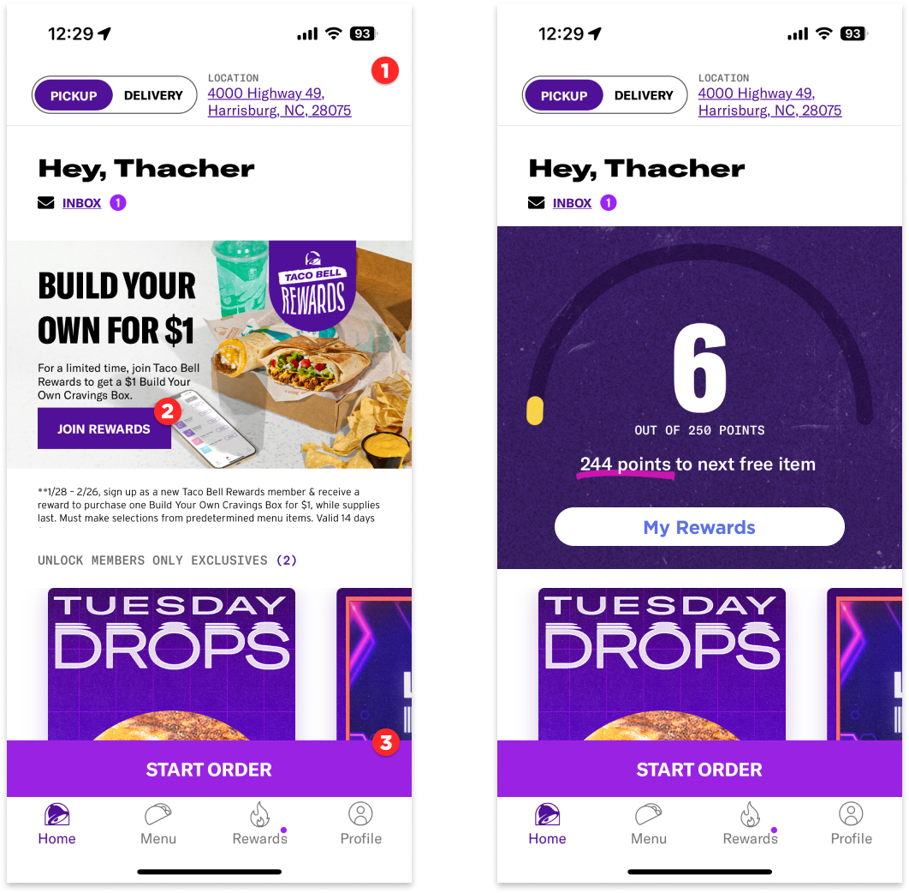
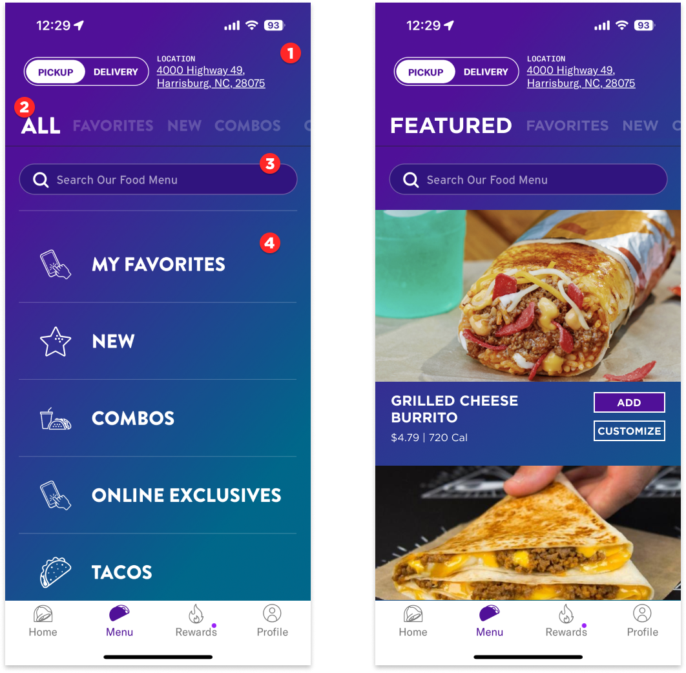
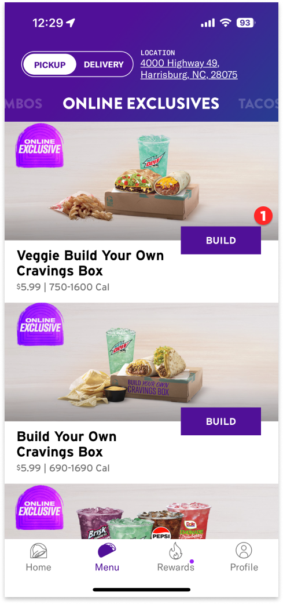
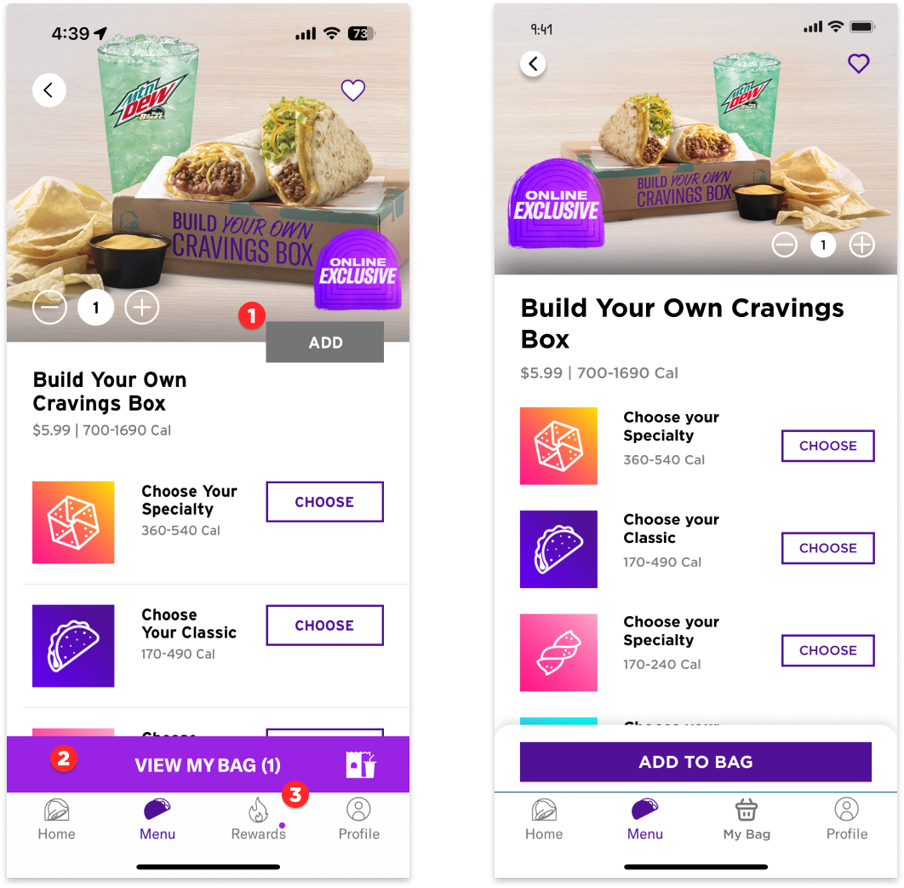
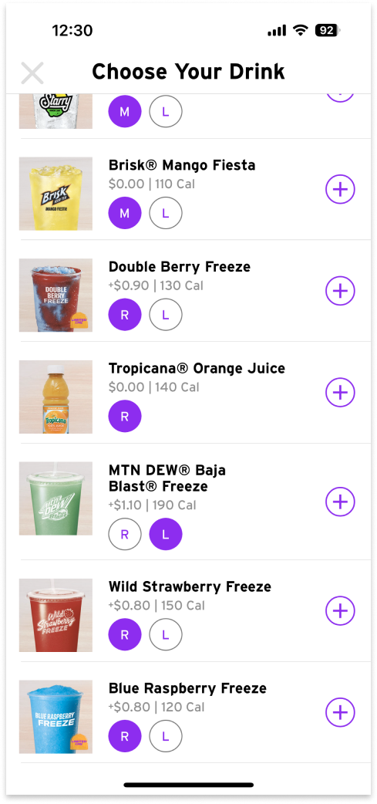

Case Study - Taco Bell App
Taco Bell, a Yum Brands subsidiary and beloved comfort food provider, made over $2,000,000,000 last year. And yet, somehow, it feels like they spent about $100 on a UX team for their mobile app. I discovered this in mid 2020 when they took my favorite item, the Quesarito, off of the menu and made it an “app exclusive.” Frustrated, but not defeated, I dutifully installed the Taco Bell app on my iPhone and got my Quesarito. To my dismay, they would later go on to kill the Quesarito altogether. Truly, we, as a society, continue to fall further into despair. But I digress. Let’s get back to the mobile app.
In this case study, I’ll walk through the ordering process for drive thru pickup. I won’t be placing an order, so the post-order experience is currently not considered in this review. Annotations are signified with red circles and are numbered.
Landing Page

- Starting off great at number one. Immediately, we learn about the current order settings. In this instance, it’s set up for pickup from my local location. This is likely based on my selection from last time. I love that it’s stored and ready to go for the next order.
- This one is a little confusing. I’m already a rewards member, but this leads me to believe that I am not. I would replace this with a frame of about the same size that tells me how many rewards points I have and what I can redeem them for.
- The “Start Order” button actually hit me with a bit of banner blindness at first. I’m generally not a big fan of edge-to-edge buttons for this reason.
The Menu

- We retain the order type information during the item selection flow. You can also change it at any time without backing all the way out of the experience like you do with something like the Domino’s app.
- This category list works, but it doesn’t give the user any feedback on how long the list is or where they are in the list. I’d consider adding a scrubber to the bottom to indicate list position.
- A search bar is always welcome. And this one works brilliantly. More on that in a second.
- Love the vertical scroll menu, but it seems a little redundant to the identical horizontal scroll menu above it. In place of this, I’d show some popular and featured items.
Selecting an Item

Let’s tap the “Build” button and hop into the combo customization experience.
Customizing the Item

- The “Add” button is at the top of the flow. Generally speaking, it makes more sense to put the submit at the end of the entry fields. Once all of the selections are made, the user is at the bottom of the page. That’s where the “Add” button should go. In my redesign, I made that update.
- This part is frustrating. Typically, the “Add to Bag” button would go here. Countless times have my wife and I tapped the “View my Bag” button when we intended to add an item to our bag. It’s infuriating! We know it works this way, but the pattern is so heavily reinforced by other experiences, that we continue to make the mistake. To fix this, I moved the add button to the bottom of the page like it is on most other apps.
- It occurs to me that the rewards tab can live on the home page, in the menu, and in the bag. It doesn’t need to be its own tab. With this freed up space, I chose to make the Bag a tab. This way, you can always hop back and forth from customizing an item to seeing what’s in your bag.
Adding a Drink
